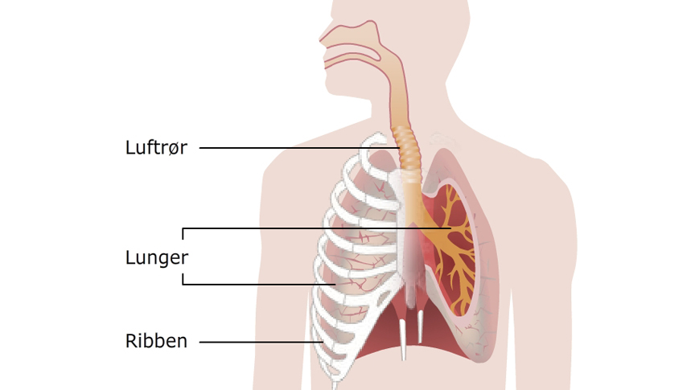

Kroppen består af en masse små celler, der arbejder for at holde kroppen i live. Uden ilten fra luften vil cellerne ikke kunne arbejde, og kroppen vil holde op med at virke. Det er derfor vigtigt, at vi får ilt ud til alle kroppens celler.
Kroppens måde at få ilt til cellerne er via lungerne. Luften omkring os er fyldt med ilt, også kaldet O2. Når vi indånder luften, vil vi derfor også indånde en masse ilt.
Vi tænker ikke over, hvordan vi trækker vejret. Vi gør det bare. Det kan være naturligt at tro, at vi trækker luften ind i lungerne, og at lungerne så udvider sig. Men det fungerer faktisk omvendt – først udvider lungerne sig, og så suges luften ind i lungerne.
Når vi skal trække vejret, er det først musklerne omkring lungerne (mellemgulvet og ribbensmusklerne), der trækker sig sammen - se billedet. Når musklerne trækker sig sammen, løfter brystkassen sig, og hulrummet omkring lungerne bliver større. Når hulrummet er større, vil luften strømme ind - se Animation 1.
Animation 1
Lungerne er nu fyldt med ilt, som cellerne i kroppen skal bruge. Ilten bliver derfor ført væk fra lungerne og hen til cellerne. I afsnit 5 vil vi gennemgå, hvordan ilten bliver ført væk. Når cellerne arbejder, dannes et stof kaldet kuldioxid (CO2). Kroppen kan ikke bruge CO2. Derfor føres CO2 tilbage til lungerne. Når vi udånder, er den luft vi udånder fyldt med CO2 - se Animation 2
Animation 2
OPGAVE 2: Kommunikér din viden om hvordan vi trækker vejret til en person i din nærhed.
Når vi trækker vejret (indånder), er det først vores muskler, der arbejder. Når brysthulen omkring lungerne er udvidet, strømmer luften ind i lungerne. Luften indeholder ilt, som cellerne skal bruge. Når vi udånder, er luften fyldt med CO2.